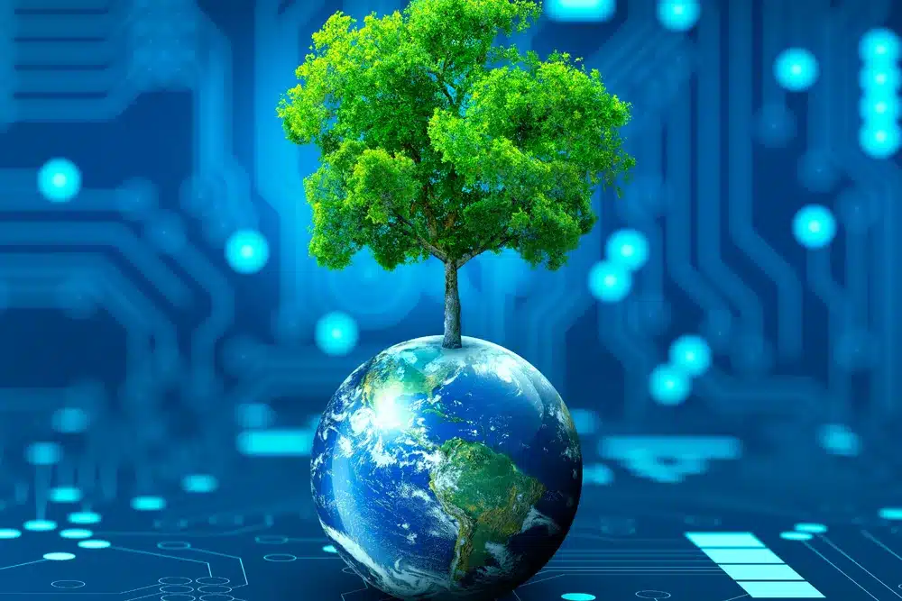

Com o passar dos anos, os problemas ambientais vêm se intensificando, refletindo em mudanças climáticas,
desmatamento, poluição do ar e dos oceanos, indicando apenas algumas das questões críticas atuais. Paralelamente,
o avanço da tecnologia se vê como algo presente em nossa sociedade atual. Diante a esse cenário, surge a combinação
da tecnologia em função do meio ambiente. A tecnologia sustentável aparece como uma solução promissora, combinando
inovação e responsabilidade ambiental para promover um desenvolvimento mais equilibrado.

Tecnologia sustentável e seus Benefícios
Tecnologias sustentáveis englobam uma ampla gama de inovação promovendo a eficiência no uso de recursos
naturais. Elas vêm como uma opção para combater diversos desafios que o planeta vem enfrentando. As opções buscadas
são principalmente reduzir os impactos negativos que as empresas exercem sobre o meio ambiente e até mesmo a
conscientização popular.
Esse ramo da tecnologia é buscado por benefícios significativos para as empresas que a adotam,
procurando por alternativas inovadoras e sustentáveis aderindo à ideia, Entre esses conceitos, destacam-se a redução
de custos e desperdícios, como também a obtenção de certificações de sustentabilidade, que adicionam valor à marca,
estão entre essas vantagens, tem a diminuição dos custos de produção e a melhoria da produtividade do negócio. Essas
tecnologias não apenas contribuem para o bem-estar do meio ambiente, como também acabam melhorando a eficiência das
empresas.